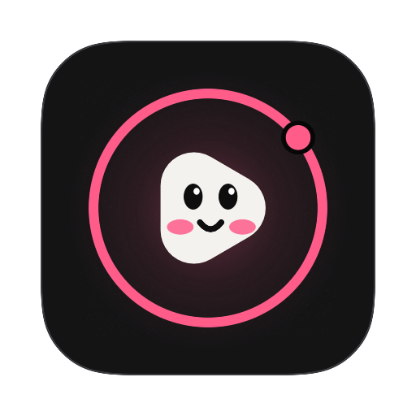

Your videos, alive on your desktop.
WallLoop turns your own videos into a live wallpaper on every display: muted, looping, hardware-decoded, and quiet on battery. It lives in your menu bar.
WallLoop — by Riven
The app
Lives quietly in your menu bar.
A menu bar icon for what’s playing, a Settings window for your library, and your desktop doing the rest.
Features
Everything a wallpaper should do.
Small, calm and careful with your battery. Nothing bundled, nothing downloaded: WallLoop plays only the videos you give it.
-
01
Your own videos
MP4, MOV and M4V from Movies › WallLoop or any folder you choose. Add or delete files in Finder and the library updates within a second.
-
02
Every display
The same video everywhere, or a different one on each screen. Fill, Fit or Stretch, and it follows displays as you plug them in.
-
03
Shuffle or in order
Change every 5, 15 or 30 minutes, every 1 or 3 hours, daily or never. Shuffle plays every video once before any repeats.
-
04
Pauses itself
On battery, in Low Power Mode, behind full-screen apps, and whenever the Mac is locked or asleep. The menu tells you why, and it resumes where it left off.
-
05
Favorites
Heart the videos you love, play them straight from the menu, or shuffle favorites only.
-
06
Shortcuts & drop to add
⌃⌥⌘→ next, ⌃⌥⌘← previous, ⌃⌥⌘P pause, from any app. Drop videos on the menu bar icon to add and play them.
How it works
Three steps to a living desktop.
-
Download
Open the DMG and drag WallLoop to Applications. It lives in the menu bar, not the Dock.
-
Add your videos
Put them in Movies › WallLoop, drop them on the menu bar icon, or choose any folder in Settings › Library.
-
Set the mood
Pick how often it changes, which display gets which video, and how it fits. Then forget it’s there.
Energy & privacy
Light on battery. Private by design.
- CPU while playing one H.264 video on one display
- ~1.8%
- CPU while paused, for any reason
- ~0%
- Trackers, accounts or analytics
- 0
Measured with Activity Monitor and top on an Apple silicon MacBook, one 1710 × 1112 display, H.264 video. Your numbers will vary with codec, resolution and how many displays you use.
-
Reads only what you choose
WallLoop is sandboxed. It reads Movies › WallLoop and the folders you pick, with read-only access, and nothing else.
-
Stays on your Mac
Your videos, settings and thumbnails never leave your Mac. No analytics, no accounts, no ads.
-
One optional request
The only network access is the update check, and you can turn it off. It’s already off in this preview build.
An honest note
The lock screen shows a still frame.
macOS doesn’t give apps a public way to play video on the lock screen. So each time the wallpaper changes, WallLoop sets a still frame from the current video as your desktop picture. The lock screen shows that same scene, and the desktop comes alive again the moment you unlock.
Read the research (opens in a new tab)Requirements
What it needs.
- macOS
- 14 Sonoma or later
- Mac
- Apple silicon or Intel (universal)
- Download
- About 3 MB
- Videos
- MP4, MOV, M4V · H.264, HEVC
- Price
- Free · MIT license
- Version
- 0.1.0 preview
FAQ
Good questions.
macOS says it can’t verify the developer. Is that expected?
Yes, for now. This preview isn’t notarized by Apple yet, so macOS blocks the first launch.
Open System Settings › Privacy & Security, scroll to Security, and click Open Anyway next to WallLoop, then confirm. You only need to do this once. Signed, notarized builds are coming.
Where do my videos go?
Nowhere. WallLoop plays them where they are and only reads the folders you choose. Videos you drop on the menu bar icon are copied into Movies › WallLoop; removing a folder from the library never deletes anything.
Which video formats work?
MP4, MOV and M4V that your Mac can decode in hardware: H.264 and HEVC everywhere, including HEVC with transparency. Videos that would need software decoding (for example AV1 on older Macs) are listed under “Can’t Play” with the reason instead of draining your battery.
Will it drain my battery?
WallLoop uses the Mac’s media engine, never keeps your display awake, and by default pauses on battery, in Low Power Mode and when full-screen apps cover the desktop. It always pauses while the Mac is locked or asleep. You can change each rule in Settings › General.
Does it change my lock screen?
It sets a still frame of the current video as your desktop picture, so the lock screen matches. The lock screen itself doesn’t play video, because macOS has no public way for apps to do that.
How do I uninstall it?
Choose Quit WallLoop from its menu bar icon, turn off Open at Login in Settings › General if you turned it on, then drag WallLoop from Applications to the Trash.
To remove its settings and thumbnails too, delete ~/Library/Containers/com.johnbosco.wallloop. Your videos stay where they are.
Is it really free?
Yes. WallLoop is free and open source under the MIT license, with no ads, accounts or in-app purchases.
Make your desktop move.
Free for macOS 14 and later. Universal, about 3 MB.
First launch. This preview isn’t notarized yet, so macOS will say it can’t verify the developer. Open System Settings › Privacy & Security and click Open Anyway. You only do this once; signed builds are coming.